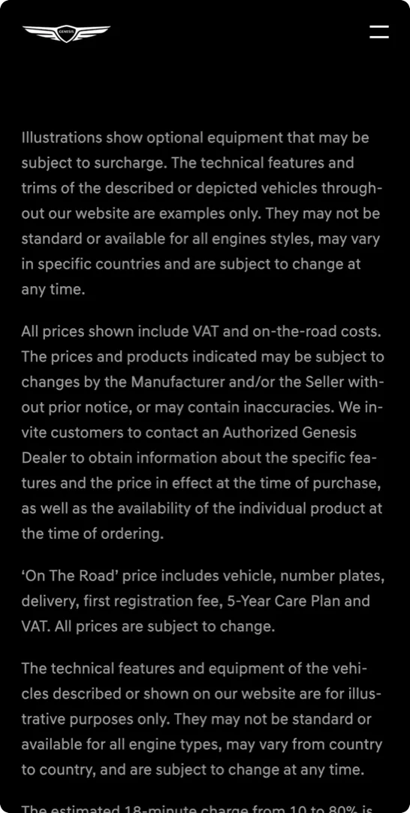
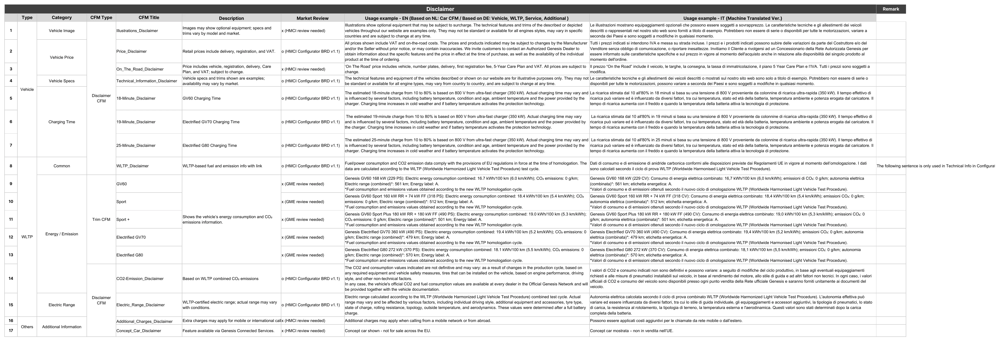
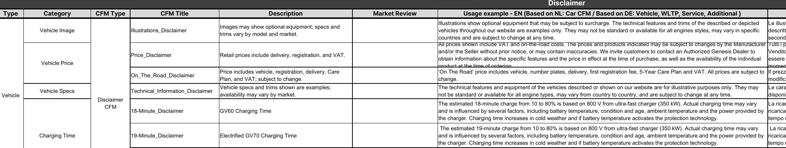

Case 04
Concentrix Catalyst
서비스 기획Service Design
Genesis EU
매번 새로 쓰던 법적 문구를,
골라 쓰는 시스템으로.Legal copy that was rewritten every time,
turned into a system you pick from.
*기여도 70%: 9인 팀이지만 이탈리아 마켓 고지 시스템(인벤토리·재사용 구조)은 단독 설계·소유, 개발·법무 검토는 협업*70% — in a team of 9, I solely designed and owned the Italy disclaimer system (inventory and reuse structure); dev and legal review in collaboration
맥락Context
마켓마다 기준이 다르다Every market differs
제네시스가 유럽 4개국에 새로 들어가는 프로젝트였어요. 저는 그중 이탈리아 사이트를 혼자 맡아 일정대로 열었고, 실무는 독일 프랑크푸르트 현지에서 했습니다. (EU 전체에선 신청 폼 테스트와 GV60 모델 상세 페이지 기획도 맡았고요.)Genesis was launching in four European markets. I owned the Italy site solo and opened it on schedule, working on-site in Frankfurt. (Across the EU rollout I also ran sign-up form testing and planned the GV60 model detail page.)
사이트 틀은 있었지만, 복사만 하면 되는 게 아니었어요. 나라마다 법·규제도, 콘텐츠도, 운영 방식도 다 달랐거든요. 그중 손이 제일 많이 가던 건 법적 고지 문구였습니다. 가격·사양 밑에 붙는 '※ 실제 차량과 다를 수 있습니다' 같은 법적 안내요.A template existed, but you couldn't just copy it: every market had its own laws, content, and operations. The part that ate the most time: legal disclaimers, the small print under prices and specs, like “may differ from the actual vehicle.”

4
유럽 마켓 · 이탈리아 단독 오너EU markets · Italy, solo owner
결정Decision
디스클레이머를
운영 시스템으로Disclaimers
as a system
이 고지 문구가 페이지마다 따로 적혀 있었어요. 그래서 한 단어만 바뀌어도 모든 페이지를 손으로 고치고, 법무 검토를 다시 받아야 했죠. 보통 이런 반복 작업은 '어떻게 더 빨리, 실수 없이 할까'로 접근해요. 체크리스트를 만들거나, 더 꼼꼼히 챙기거나.That fine print was written separately on each page, so changing a single word meant fixing every page by hand and re-running legal review. The usual instinct is to make that repetition faster and less error-prone: a checklist, more diligence.
하지만 저는 반대로 봤어요. 사람이 매번 반복하는 일은 더 잘하게 만들 게 아니라, 아예 시스템이 대신하게 만들어야 한다고요. 그래서 고지 문구를 한 번 만들어 여러 곳에서 가져다 쓰는 콘텐츠 블록(AEM 기능)으로 묶었어요. 페이지 종류마다 필요한 안내를 미리 정해두고, 운영자는 골라 넣기만 하고, 한 곳만 고치면 전체에 반영되게요.I took the opposite view: a task a person repeats shouldn't be done better by the person; it should be handed to the system entirely. So I bundled the notices into reusable content blocks (an AEM feature): predefine the right notice for each page type, let operators just pick and drop it in, and fix it in one place to update everywhere.
전 · 페이지마다 따로Before · per page
후 · 한 번 정의, 재사용After · define once
한 번 정의하면 모든 페이지에 재사용.Define once, reuse everywhere.
Before
- 페이지마다 개별 작성Written per page
- 고지 변경 시 전 페이지 수작업Manual edits across pages
- 매번 법무 재검토Legal re-review each time
After
- 페이지 유형별 기준 정립Standard by page type
- 골라서 재사용Select & reuse
- 변경은 시스템 단위 일괄Update once, everywhere
디스클레이머 인벤토리 · 페이지 유형별 전체Disclaimer Inventory · full sheet, by page type

고지 문구 정의 · 일부 확대Per-page-type spec · detail view

의미Why it matters
겉보기엔 작은 변화지만, 일하는 방식이 바뀌었어요. 매번 반복하던 일을, 한 번 정해두면 계속 재사용되는 구조로 옮긴 거죠. 이런 변화는 페이지가 늘고 나라가 늘수록 더 크게 돌아옵니다.It looks small, but the way of working changed: a task we repeated every time became a structure defined once and reused. The more pages and markets pile up, the more it pays back.